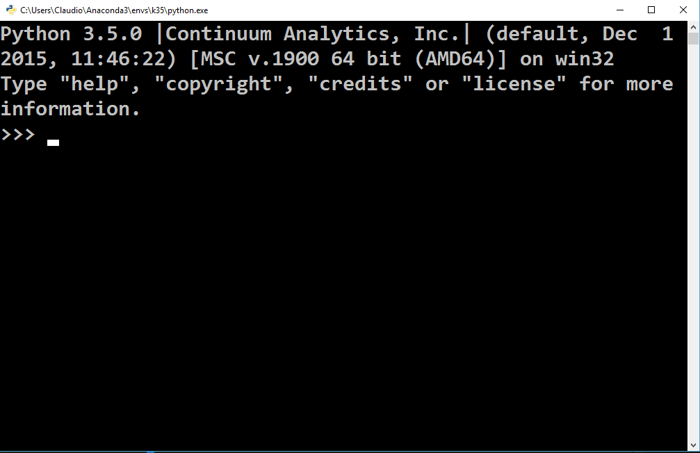
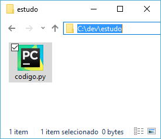
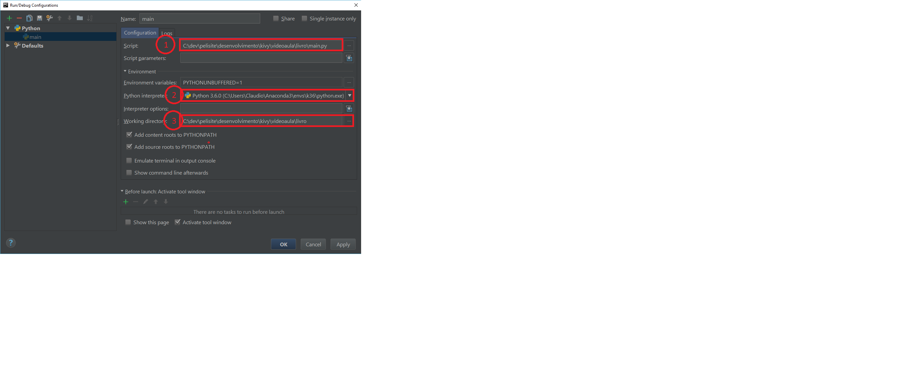
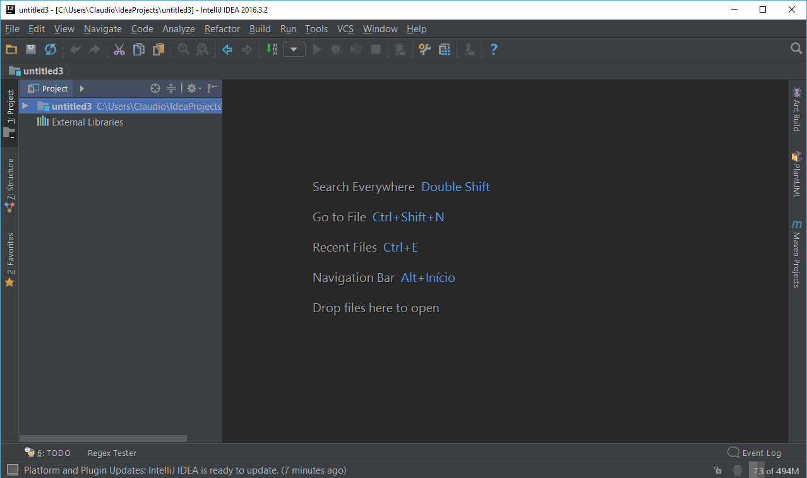
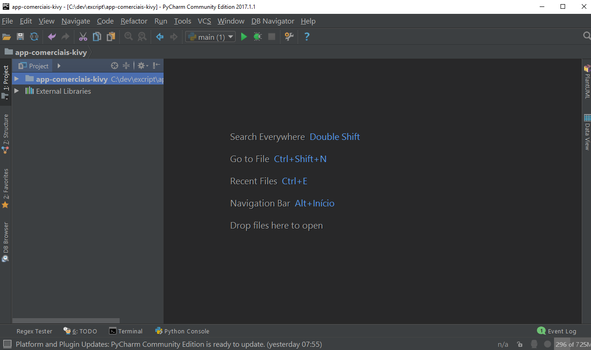

|
Nesta aula estudaremos a relação entre o Python e a linha de comando, seja no Windows, Linux ou Mac |
INTRODUÇÃO
É importante entendermos o modo de funcionamento do Python para que consigamos entender a relação existente entre a IDE, o Sistema Operacional e o interpretador do Python.
O PYTHON COMO LINGUAGEM
O Python é uma linguagem de programação de alto nível e sua especificação, ou seja, sua sintaxe e semântica são definidas por um grupo de desenvolvimento internacional. Todo trabalho produzido pela equipe pode é publicado no site oficial da linguagem http://www.python.org .
O PYTHON COMO INTERPRETADOR
O mesmo grupo internacional que desenvolve a linguagem Python também desenvolve um interpretador para códigos Python.
É importante observar a diferença entre estabelecer as normas de uma linguagem e o desenvolvimento de um interpretador ou compilador para a mesma.
Atualmente é normal que o mesmo grupo que desenvolve a sintaxe de uma linguagem de programação também forneça um compilador ou interpretador, mas isso não é uma regra.
Então eu lhe pergunto: quando alguém se refere ao Python, o mesmo estará querendo se referir a linguagem ou ao interpretador?
É correto dizer que o Python é uma linguagem lenta?
A verdade é que no dia-a-dia acabamos nos referindo ao compilador e a linguagem como sendo Python o que geralmente não acarreta em problemas, porém, dizer que o Python é uma linguagem lenta é por definição um erro.
O que pode ser lento é o interpretador da linguagem Python escrito pelo grupo oficial, porém, a linguagem Python também pode ser compilada e sua performance quando executada chega bastante perto de um código implementado pela linguagem C!
Portanto, vamos agora estabelecer alguns conceitos:
- Python é uma linguagem
- Interpretador é uma aplicação que entende a linguagem Python
- Compilador é uma aplicação que transforma código Python em outro código, como por exemplo, o código de máquina
LINHA DE COMANDO
O interpretador do Python é uma grande aplicação que contém um arquivo com o mesmo nome da linguagem na pasta em que foi instalado.
Se fores até o diretório da instalação do Python e supondo que estás num ambiente Windows, encontrarás um arquivo de nome python.exe.
Se deres um duplo clique sobre o executável será aberto uma janela com o Prompt de Comando do Windows e nesta encontrarás o Modo Interativo do Python, ou seja, o local onde você pode digitar instruções Python, pressionar a tecla Enter que a instrução será processada e o resultado impresso na sequência.
Sendo o interpretador do Python uma aplicação executada na linha de comando, podemos executar através do prompt e dessa forma definir alguns parâmetros, como por exemplo, o nome do arquivo que contém código Python e que desejamos executar.
Inicialmente, crie um arquivo de nome codigo.py em qualquer diretório do seu computador. Em seguida, abra este arquivo com o Bloco de Notas ou então, qualquer outro editor de texto.
Insira uma única linha dentro do arquivo codigo.py

Em seguida, salve as alterações que fizemos no arquivo codigo.py, abra o Prompt de Comando do Windows, vá até o diretório em que você salvou o arquivo Python que acabamos de criar e digite a seguinte instrução no Prompt de Comando:
python codigo.py

Se todos os passos anteriores foram executados com sucesso, será impresso no Prompt de Comando a frase que colocamos dentro da instrução print().
O exemplo que acabamos de realizar tem por objetivo demonstrar que arquivos Python são interpretados pelo executável do Python. Toda vez que desejarmos executar arquivos contendo código Python teremos que executar o executável python.exe e em seguida informar o nome do arquivo a ser interpretado.
É super importante entender que somente o arquivo python.exe é capaz de interpretar código Python. E também, é super importante entender, que todas as mensagens de erro que recebemos quando após a execução de algum código Python, foi enviado pelo interpretador da linguagem para a saída padrão.
O PYTHON E AS IDE's
Desenvolver aplicações pode se tornar uma atividade bastante complexa e demorada. Por exemplo, se estivermos escrevendo uma aplicação utilizando um editor de texto simples como o Notepad do Windows, as palavras da linguagem não serão coloridas e todas as vezes que desejarmos executar o código, teremos que abrir o Prompt de Comando, ir até o diretório em que estamos salvando os arquivos e por fim, executar o arquivo principal que contém código Python.
No intento de evitar esse trabalho repetitivo foram criados aplicações para processamento de códigos cada vez mais avançados. Uma das características desses editores avançados, foi o envio de arquivos contendo códigos para o interpretador da linguagem com o pressionar de um única tecla.
Eis que nascia o termo IDE (Ambiente de Desenvolvimento Integrado).
A maior parte dos cursos de desenvolvimento de aplicações utiliza desde as primeiras aulas IDEs potentes que além de facilitar o desenvolvimento, também facilitam o aprendizado e o estudo da linguagem.
A comodidade e facilidade que as IDEs proporcionam tem um lado negativo, que é o desconhecimento do processo fundamental da execução de código-fonte.
É comum ler em fóruns ou então ouvir alunos confundindo a linguagem, o interpretador/compilador e a IDE! Por exemplo:
- "O PyCharm está exibindo uma mensagem de erro"
- "Esse código não é executado no meu PyCharm"
Num primeiro momento pode parecer uma problema bobo, porém, enquanto o estudante não entende de fato os conceitos, toda a sua forma de pensar será prejudicada e toda a visão sobre como os computadores funcionam estará debilitado.
Portanto, indiferente da IDE que você utilize, a mesma NUNCA terá acoplado junto ao seu código o interpretador da linguagem. A função da IDE nada tem a ver com a linguagem e portanto a função da IDE é enviar o arquivo contendo código como parâmetro para o interpretador da linguagem. Inclusive, isso pode ser observado na IDE PyCharm bem facilmente, veja a imagem a seguir:
Na imagem acima há 3 marcações, a seguir e definição de cada parte.
- Nome do arquivo que será enviado para o interpretador
- Nome do interpretador do Python selecionado
- Caminho para o local que contém os arquivos deste projeto
CONCLUSÃO
O objetivo desde breve trabalho é demonstrar que toda IDE envia o nosso código para o interpretador/compilador. Em seguida, a mesma lê a resposta que o interpretador/compilador envia para a saída padrão e exibe para o programador.
Portanto, uma IDE é uma camada de abstração entre o desenvolvedor e o interpretador/compilador. Essa camada tem por objetivo facilitar o desenvolvimento, porém, a mesma não se faz obrigatória e jamais fará parte do nosso software, ou seja, a IDE nunca estará contida na aplicação que iremos distribuir.
De agora em diante, indiferente da linguagem, observe que TODAS possuem um ou vários interpretador/compiladores e também, possuem uma ou várias IDEs para o desenvolvimento de aplicações.
Por fim, veja nas imagens finais as várias IDEs desenvolvidas pela JetBrains. Observe que todas são muito parecidas, porém, cada uma é destinada ao desenvolvimento de uma linguagem. A JetBrains reutiliza um mesmo projeto para o desenvolvimento de várias IDEs, inclusive a JetBrains é a desenvolvedor da conceituada IDE do AndroidStudio!
IDE IntelliJ IDEA
IDE PyCharm
LINKS EXTERNOS
Tags curso, python, cmd, linha de comando, blog
Comentários
comments powered by Disqus